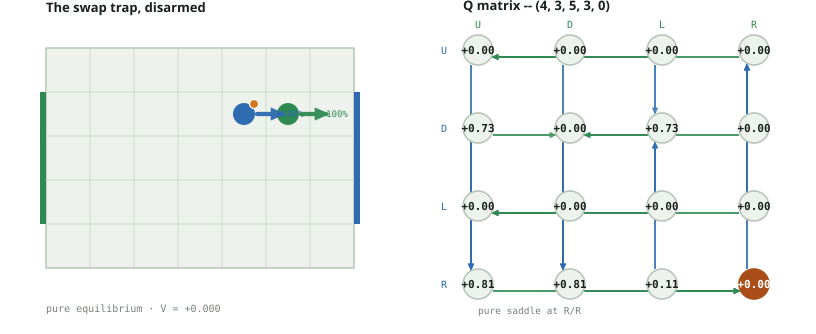
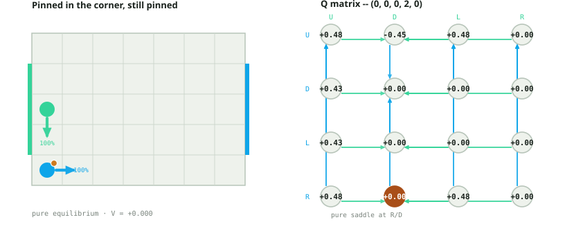
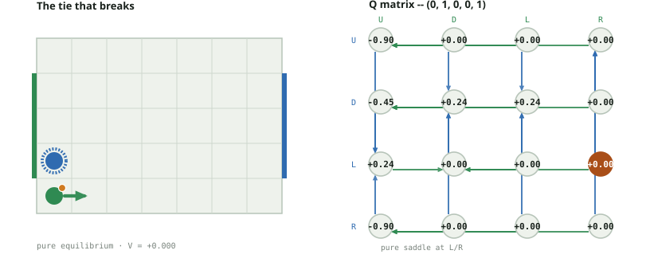
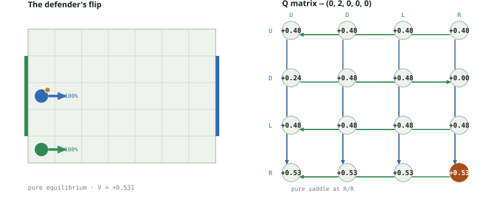
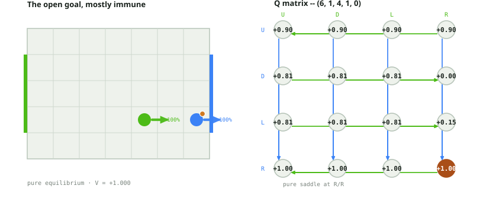
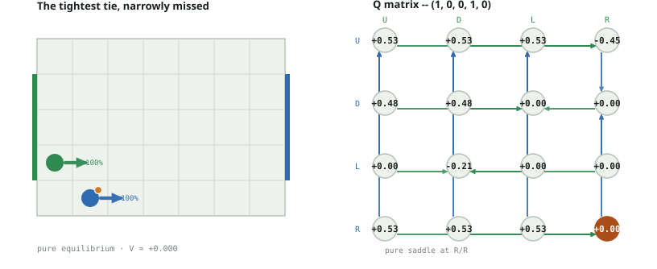
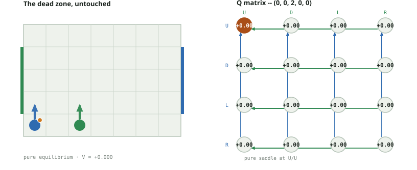

Soccer Markov Nash · A10-coinflip board
7 by 5 board; goal rows 1, 2, 3; simultaneous U/D/L/R; A10's exact collision and swap structure, with one change -- a fair coin, not the ball carrier, decides who wins a contested square or a swap. Players never occupy the same square. The loser of a contested square or swap still receives the ball, regardless of who the coin favored.
Selection rule: preserve the best worst-case payoff, then maximize mean payoff over opponent actions among exact security ties. Identical-score ties use action order. The secondary criterion is a documented selection convention, not a claim that Nash equilibrium is unique. No uniform tie mix is substituted for the solver policy.
Every one of the 2380 states on this board still resolves to a pure
equilibrium: this board keeps A10's exact collision and swap structure but replaces the
automatic "carrier always wins" resolution with a fair coin -- real randomness in
what happens after an action pair is chosen, not A10's own headline finding of weak
dominance among security ties. Re-solving every stage game confirms
no_saddle_count = 0: zero states need a genuinely mixed policy, exactly matching
A10 itself (see docs/data/explorer.json). The reason is different from A10's,
though -- here, averaging two contest outcomes at a fixed 50/50 probability still collapses to
a single worst-case-optimal action, because the coin only reweights which branch a
contested cell leads to, not whether a dominant response to that reweighting exists.
Genuine randomness in outcomes does not, by itself, force randomization in which action to
pick.
Case 1 below is the most direct test of what the coin actually changes: at the exact same state as A10's own "swap trap," halving the swap's guaranteed loss into a 50/50 gamble is enough to flip player 0's selected action from Down to Right. It is not a universal effect -- case 2, A10's own "pinned in the corner" at the same state, shows the identical halving arithmetic falling short of a flip, because the gap it needed to close was larger to begin with. These are discounted stationary values with gamma 0.9, not the undiscounted 100-turn assignment.
Interactive explorer · Audit and reproduction details
State (4, 3, 5, 3, 0) · player 0 carries the ball · V = +0.000000
Open this position in the interactive explorer →
Security-tied alternatives (not probabilities): P0 U/D/L/R · P1 R
This is A10's own case 1 state (docs/a10_cases.html), replayed under a fair coin. Under the deterministic rule, R is player 0's only action that reaches player 1's square, and (R, L) triggers the same genuine swap A10 documents: the winner of the coin there is rigged 100% to the carrier, but the loser keeps the ball regardless of who 'won' -- so DET's swap sends the ball to the defender every single time, crashing (R, L) to -0.590490 and knocking R out of the safe tie. Flip the coin fair, and the same swap sometimes goes the other way: when the coin instead favors the defender, the loser is now the carrier, who keeps the ball, landing at (5,3,4,3,0), worth 0.9. Averaged with the still-possible carrier-loses branch (landing at (5,3,4,3,1), worth -0.6561, the same downstream value DET's own swap always lands on), Q_cf(R,L) = 0.5*(0.9*-0.6561) + 0.5*(0.9*0.9) = 0.109755 (verified below against game.transitions()). R's own worst case is no longer the swap cell at all -- it is now the harmless (R, R) cell at exactly 0, tying R with U, D, and L. Among that four-way tie, R's mean payoff (0.432439) beats D's (0.3645), so the solver's secondary criterion now selects R, not D: the swap trap is genuinely defused, not just softened. This is not an isolated fluke -- the identical 'R newly joins the safety tie' pattern recurs at 15 of the 30 same-row, ball-adjacent-defender states on this board, and every one of them has x0 >= 3 (the attacking half); it never happens for x0 <= 2.

| P0 / P1 | U | D | L | R |
|---|---|---|---|---|
| U | 0.000000 | 0.000000 | 0.000000 | 0.000000 |
| D | 0.729000 | 0.000000 | 0.729000 | 0.000000 |
| L | 0.000000 | 0.000000 | 0.000000 | 0.000000 |
| R | 0.810000 | 0.810000 | 0.109755 | 0.000000 |
| P0 / P1 | U | D | L | R |
|---|---|---|---|---|
| U | (4, 4, 5, 4, 0) | (4, 4, 5, 2, 0) | (4, 4, 4, 3, 0) | (4, 4, 6, 3, 0) |
| D | (4, 2, 5, 4, 0) | (4, 2, 5, 2, 0) | (4, 2, 4, 3, 0) | (4, 2, 6, 3, 0) |
| L | (3, 3, 5, 4, 0) | (3, 3, 5, 2, 0) | (3, 3, 4, 3, 0) | (3, 3, 6, 3, 0) |
| R | (5, 3, 5, 4, 0) | (5, 3, 5, 2, 0) | (5, 3, 4, 3, 1) | (5, 3, 6, 3, 0) |
State (0, 0, 0, 2, 0) · player 0 carries the ball · V = +0.000000
Open this position in the interactive explorer →
Security-tied alternatives (not probabilities): P0 D/L/R · P1 D/R
A10's own case 2 state, for direct comparison. Player 0's U still targets the same open, non-blocked contest cell (0,1) that player 1's D also targets; under DET the carrier always wins the coin, but the loser -- the defender -- still ends up with the ball regardless, crashing the value to -0.9 exactly as A10 documents. Under coinflip, half the time the coin instead favors the defender, so the carrier keeps the ball and lands at the harmless (0,0,0,1,0), worth 0.0. Averaging: Q_cf(U,D) = 0.5*(0.9*-1.0) + 0.5*(0.9*0.0) = -0.45, exactly half of DET's -0.9 (both branches verified below; the -1.0 continuation is A10's own 'open net' state, case 5, where scoring bypasses the coin entirely). But halving the wound is not the same as closing it: D, L, and R still guarantee exactly 0, so U's floor of -0.45 remains strictly below the safe tie. The selected policy is unchanged from A10 -- R for player 0, D for player 1. This is the honest negative result case 1 does not give away for free: averaging a punishment only rescues an action when the punishment was already close enough to the safe floor, and -0.9 was not.

| P0 / P1 | U | D | L | R |
|---|---|---|---|---|
| U | 0.478297 | -0.450000 | 0.478297 | 0.000000 |
| D | 0.430467 | 0.000000 | 0.000000 | 0.000000 |
| L | 0.430467 | 0.000000 | 0.000000 | 0.000000 |
| R | 0.478297 | 0.000000 | 0.478297 | 0.000000 |
| P0 / P1 | U | D | L | R |
|---|---|---|---|---|
| U | (0, 1, 0, 3, 0) | (0, 1, 0, 2, 1) | (0, 1, 0, 2, 0) | (0, 1, 1, 2, 0) |
| D | (0, 0, 0, 3, 0) | (0, 0, 0, 1, 0) | (0, 0, 0, 2, 0) | (0, 0, 1, 2, 0) |
| L | (0, 0, 0, 3, 0) | (0, 0, 0, 1, 0) | (0, 0, 0, 2, 0) | (0, 0, 1, 2, 0) |
| R | (1, 0, 0, 3, 0) | (1, 0, 0, 1, 0) | (1, 0, 0, 2, 0) | (1, 0, 1, 2, 0) |
State (0, 1, 0, 0, 1) · player 1 carries the ball · V = +0.000000
Open this position in the interactive explorer →
Security-tied alternatives (not probabilities): P0 L · P1 R
The reverse of the swap trap, and the first case here where player 1 carries the ball. Player 0's D at (0,1) and player 1's U at (0,0) target each other's current cell -- a genuine swap. Under DET, the carrier (player 1) always wins the coin, so the loser (player 0, the defender) always ends up with the ball after the swap, landing at (0,0,0,1,0), worth 0.0 -- a clean, guaranteed break-even for D, tied with L. Flip the coin fair, and half the time the carrier instead keeps the ball through the swap, landing player 0 at (0,0,0,1,1) -- the exact 'open net' state from case 2's note above, an unconditional loss worth -1.0 to player 0 since scoring bypasses the coin. Q_cf(D,U) = 0.5*(0.9*-1.0) + 0.5*(0.9*0.0) = -0.45 (verified below), so D's guaranteed floor collapses from 0 to -0.45 and falls out of the tie -- L is now player 0's only safe action. Randomizing a contest's winner does not uniformly help the player who used to be locked out of winning it; here it strictly hurts the player who used to be guaranteed a fair split, because the alternative to 'always break even' is a coin flip against an outcome that is scored, not just inconvenient.

| P0 / P1 | U | D | L | R |
|---|---|---|---|---|
| U | -0.900000 | 0.000000 | 0.000000 | 0.000000 |
| D | -0.450000 | 0.239148 | 0.239148 | 0.000000 |
| L | 0.239148 | 0.000000 | 0.000000 | 0.000000 |
| R | -0.900000 | 0.000000 | 0.000000 | 0.000000 |
| P0 / P1 | U | D | L | R |
|---|---|---|---|---|
| U | (0, 2, 0, 1, 1) | (0, 2, 0, 0, 1) | (0, 2, 0, 0, 1) | (0, 2, 1, 0, 1) |
| D | (0, 0, 0, 1, 1) | (0, 1, 0, 0, 1) | (0, 1, 0, 0, 1) | (0, 0, 1, 0, 1) |
| L | (0, 1, 0, 0, 1) | (0, 1, 0, 0, 1) | (0, 1, 0, 0, 1) | (0, 1, 1, 0, 1) |
| R | (1, 1, 0, 1, 1) | (1, 1, 0, 0, 1) | (1, 1, 0, 0, 1) | (1, 1, 1, 0, 1) |
State (0, 2, 0, 0, 0) · player 0 carries the ball · V = +0.531441
Open this position in the interactive explorer →
Security-tied alternatives (not probabilities): P0 R · P1 U/D/L/R
The mirror image of case 2's geometry -- same corner, same contest, but from the other side of the board and the other player's turn to worry about it. Player 0 carries the ball at (0,2) and plays D into the open cell (0,1); player 1 defends from (0,0) and plays U into the same cell. Under DET, the carrier (0) always wins the coin, so the loser -- player 1 -- always ends up with the ball, landing at (0,1,0,0,1), worth 0.0; that is why U is player 1's selected column on the deterministic board. Under coinflip, half the time the defender instead wins the coin, and the rule for a won, non-swap contest is that only the winner physically moves -- the loser stays put -- so the carrier (loser of the coin, but never forced to give up the ball) simply keeps it exactly where it stood, landing at (0,2,0,1,0), worth 0.531441. Q_cf(D,U) = 0.5*(0.9*0.0) + 0.5*(0.9*0.531441) = 0.23914845 (verified below). Player 1's minimax tie set never changes -- all four columns still guarantee the same 0.531441 -- but U's own mean payoff gets worse relative to R's once this one cell rises, so the solver's secondary criterion now selects R instead of U: a genuine flip that leaves the primary tie completely untouched.

| P0 / P1 | U | D | L | R |
|---|---|---|---|---|
| U | 0.478297 | 0.478297 | 0.478297 | 0.478297 |
| D | 0.239148 | 0.478297 | 0.478297 | 0.000000 |
| L | 0.478297 | 0.478297 | 0.478297 | 0.478297 |
| R | 0.531441 | 0.531441 | 0.531441 | 0.531441 |
| P0 / P1 | U | D | L | R |
|---|---|---|---|---|
| U | (0, 3, 0, 1, 0) | (0, 3, 0, 0, 0) | (0, 3, 0, 0, 0) | (0, 3, 1, 0, 0) |
| D | (0, 1, 0, 0, 1) | (0, 1, 0, 0, 0) | (0, 1, 0, 0, 0) | (0, 1, 1, 0, 0) |
| L | (0, 2, 0, 1, 0) | (0, 2, 0, 0, 0) | (0, 2, 0, 0, 0) | (0, 2, 1, 0, 0) |
| R | (1, 2, 0, 1, 0) | (1, 2, 0, 0, 0) | (1, 2, 0, 0, 0) | (1, 2, 1, 0, 0) |
State (6, 1, 4, 1, 0) · player 0 carries the ball · V = +1.000000
Open this position in the interactive explorer →
Security-tied alternatives (not probabilities): P0 R · P1 U/D/L/R
A10's own case 4 state. Player 0 already sits at the right wall in a goal row with the ball; R pushes past the attacking edge and scores unconditionally, exactly as in the deterministic game -- game.transitions() confirms every one of player 1's replies to R still ends the game as a player-0 win, because a score is checked before _resolve_with_winner ever consults which player the coin favors. R's entire row is therefore bit-for-bit identical between the two boards: [1.0, 1.0, 1.0, 1.0] in both. But 'immune' describes only the winning row, not the whole matrix: player 0's L still reaches a genuine swap against player 1's R (verified below), and that cell does change -- DET sends it to -0.590490 (the defender always wins the coin-that-isn't-a-coin, exactly as in case 1 above) while coinflip softens it to 0.154755 by the identical 0.5/0.5 averaging arithmetic used throughout this document. The optimum is untouched; the alternatives are not.

| P0 / P1 | U | D | L | R |
|---|---|---|---|---|
| U | 0.900000 | 0.900000 | 0.900000 | 0.900000 |
| D | 0.810000 | 0.810000 | 0.810000 | 0.000000 |
| L | 0.810000 | 0.810000 | 0.810000 | 0.154755 |
| R | 1.000000 | 1.000000 | 1.000000 | 1.000000 |
| P0 / P1 | U | D | L | R |
|---|---|---|---|---|
| U | (6, 2, 4, 2, 0) | (6, 2, 4, 0, 0) | (6, 2, 3, 1, 0) | (6, 2, 5, 1, 0) |
| D | (6, 0, 4, 2, 0) | (6, 0, 4, 0, 0) | (6, 0, 3, 1, 0) | (6, 0, 5, 1, 0) |
| L | (5, 1, 4, 2, 0) | (5, 1, 4, 0, 0) | (5, 1, 3, 1, 0) | (5, 1, 4, 1, 1) |
| R | (-1, -1, -1, -1, 0) | (-1, -1, -1, -1, 0) | (-1, -1, -1, -1, 0) | (-1, -1, -1, -1, 0) |
State (1, 0, 0, 1, 0) · player 0 carries the ball · V = +0.000000
Open this position in the interactive explorer →
Security-tied alternatives (not probabilities): P0 D/R · P1 R
A10's own case 7 state -- the smallest tie shape on the deterministic board (16 of 2380 states: player 0's D and R tied, player 1's R alone). Player 0's L still hides the same contest A10 documents: (L, D) both target (0,0); the carrier wins the physical race under DET but the loser keeps the ball anyway, crashing L to -0.9. Under coinflip the same contest sometimes lets the carrier keep its own square instead (verified below: the branch where the defender wins the coin lands at (1,0,0,0,0), worth 0.531441, not a loss at all), softening Q_cf(L,D) to 0.5*(0.9*-1.0) + 0.5*(0.9*0.531441) = -0.21085155 -- more than three-quarters of the way back to the safe floor of 0, the closest any cell in this document comes to flipping without actually doing so. It still falls short: D and R remain the only safe actions, unchanged from A10. This is not an isolated result -- across the whole board, the exact 'two-tied-and-one-alone' shape that defines this case survives coinflip at only 8 of the 16 states where it occurs under DET; the other 8 widen the way case 1 above does.

| P0 / P1 | U | D | L | R |
|---|---|---|---|---|
| U | 0.531441 | 0.531441 | 0.531441 | -0.450000 |
| D | 0.478297 | 0.478297 | 0.000000 | 0.000000 |
| L | 0.000000 | -0.210852 | 0.000000 | 0.000000 |
| R | 0.531441 | 0.531441 | 0.531441 | 0.000000 |
| P0 / P1 | U | D | L | R |
|---|---|---|---|---|
| U | (1, 1, 0, 2, 0) | (1, 1, 0, 0, 0) | (1, 1, 0, 1, 0) | (1, 1, 0, 1, 1) |
| D | (1, 0, 0, 2, 0) | (1, 0, 0, 0, 0) | (1, 0, 0, 1, 0) | (1, 0, 1, 1, 0) |
| L | (0, 0, 0, 2, 0) | (0, 0, 0, 1, 1) | (0, 0, 0, 1, 0) | (0, 0, 1, 1, 0) |
| R | (2, 0, 0, 2, 0) | (2, 0, 0, 0, 0) | (2, 0, 0, 1, 0) | (2, 0, 1, 1, 0) |
State (0, 0, 2, 0, 0) · player 0 carries the ball · V = +0.000000
Open this position in the interactive explorer →
Security-tied alternatives (not probabilities): P0 U/D/L/R · P1 U/D/L/R
A10's own case 8 state -- the single most common shape on the whole board (514 of 2380 states, unchanged under coinflip too). Every one of the 16 Q-matrix cells is exactly 0.0 in both games, not merely tied at the same value but bit-for-bit identical, because this state's own dozen successors (verified below) are themselves all exactly 0.0 in both games. Averaging two branches that are each worth 0 is worth 0 no matter which player the coin favors: 0.5*0 + 0.5*0 = 0 for any contest this state's actions could reach. Not every quiet region of the board is this literal about it -- the open goal above shows a matrix that visibly changes even though its optimal row does not -- but the dead zone is: coinflip changes nothing here, down to the last decimal.

| P0 / P1 | U | D | L | R |
|---|---|---|---|---|
| U | 0.000000 | 0.000000 | 0.000000 | 0.000000 |
| D | 0.000000 | 0.000000 | 0.000000 | 0.000000 |
| L | 0.000000 | 0.000000 | 0.000000 | 0.000000 |
| R | 0.000000 | 0.000000 | 0.000000 | 0.000000 |
| P0 / P1 | U | D | L | R |
|---|---|---|---|---|
| U | (0, 1, 2, 1, 0) | (0, 1, 2, 0, 0) | (0, 1, 1, 0, 0) | (0, 1, 3, 0, 0) |
| D | (0, 0, 2, 1, 0) | (0, 0, 2, 0, 0) | (0, 0, 1, 0, 0) | (0, 0, 3, 0, 0) |
| L | (0, 0, 2, 1, 0) | (0, 0, 2, 0, 0) | (0, 0, 1, 0, 0) | (0, 0, 3, 0, 0) |
| R | (1, 0, 2, 1, 0) | (1, 0, 2, 0, 0) | (1, 0, 2, 0, 1) | (1, 0, 3, 0, 0) |